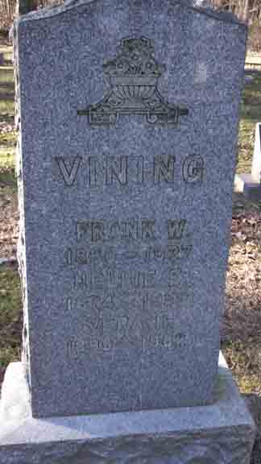

Documentation for Frank W. Vining - Nellie E. [...]
Census Data
| |
1900 |
1910 |
1920 |
1930 |
1940 |
| Frank W. Vining |
40 |
50 |
59 |
70 |
dead |
| Nellie E. ([…]) Vining |
25 |
35 |
43 |
55 |
65 |
| Vera Hazel Vining |
4 |
14 |
24 |
34 |
44 |
1900 Lorain (ward 2), Lorain County, Ohio - dwelling 140, family [199?]. Also living in this household in 1900 was Robert J. Scarlet (b. January 1868, Canada).

1910 Lorain (ward 2), Lorain County, Ohio - dwelling 312, family 326:

1920 Lorain (ward 2), Lorain County, Ohio - dwelling 70, family 71:

1930 Lorain, Lorain County, Ohio - dwelling 170, family 181:

1940 Lorain, Lorain County, Ohio:

Death Data
Headstone for Frank W. Vining, Nellie E. ([...]) Vining, and daughter Vera H. Vining, in Elmwood Cemetery, Lorain, Lorain County, Ohio (from Find A Grave):
